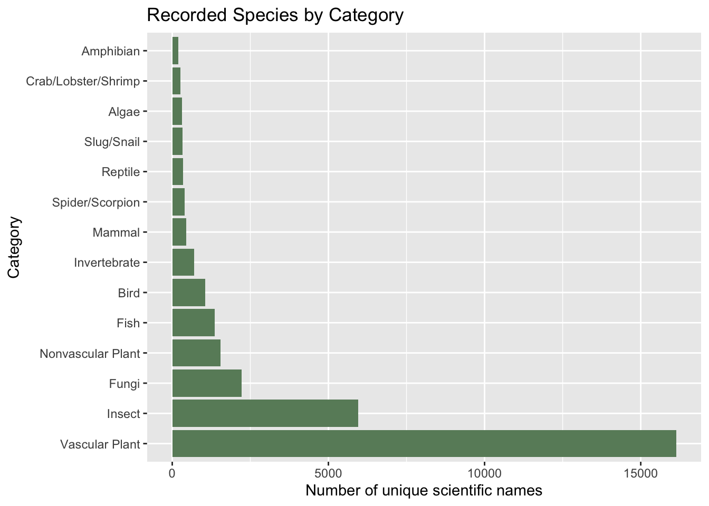
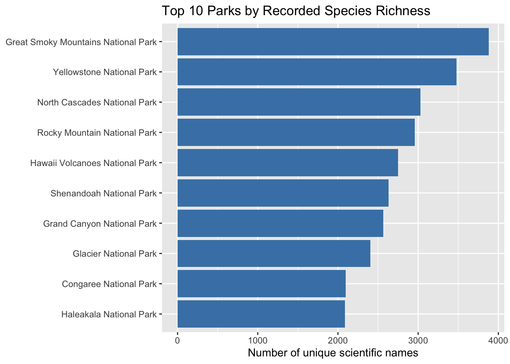
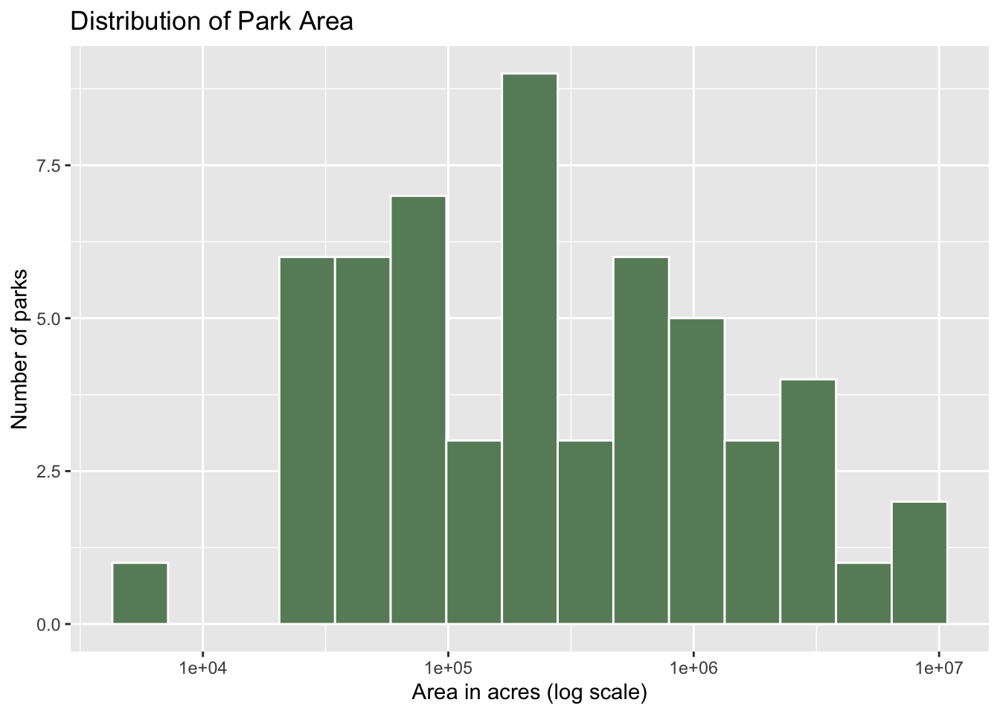
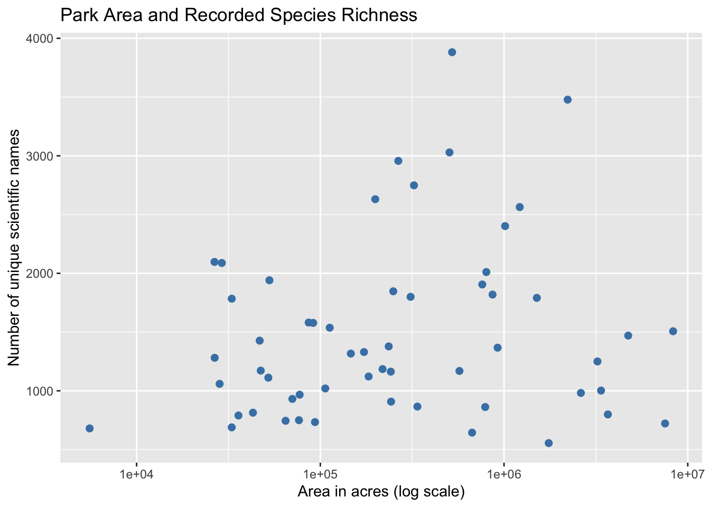

Member 2 Jason Y
Your exploratory data analysis of the team datasets go here.
# A tibble: 6 × 6
`Park Code` `Park Name` State Acres Latitude Longitude
<chr> <chr> <chr> <dbl> <dbl> <dbl>
1 ACAD Acadia National Park ME 47390 44.4 -68.2
2 ARCH Arches National Park UT 76519 38.7 -110.
3 BADL Badlands National Park SD 242756 43.8 -102.
4 BIBE Big Bend National Park TX 801163 29.2 -103.
5 BISC Biscayne National Park FL 172924 25.6 -80.1
6 BLCA Black Canyon of the Gunnison Nati… CO 32950 38.6 -108. [1] 56 6 Species.ID Park.Name Category Order Family
1 ACAD-1000 Acadia National Park Mammal Artiodactyla Cervidae
2 ACAD-1001 Acadia National Park Mammal Artiodactyla Cervidae
3 ACAD-1002 Acadia National Park Mammal Carnivora Canidae
4 ACAD-1003 Acadia National Park Mammal Carnivora Canidae
5 ACAD-1004 Acadia National Park Mammal Carnivora Canidae
6 ACAD-1005 Acadia National Park Mammal Carnivora Felidae
Scientific.Name
1 Alces alces
2 Odocoileus virginianus
3 Canis latrans
4 Canis lupus
5 Vulpes vulpes
6 Lynx canadensis
Common.Names Record.Status
1 Moose Approved
2 Northern White-Tailed Deer, Virginia Deer, White-Tailed Deer Approved
3 Coyote, Eastern Coyote Approved
4 Eastern Timber Wolf, Gray Wolf, Timber Wolf Approved
5 Black Fox, Cross Fox, Eastern Red Fox, Fox, Red Fox, Silver Fox Approved
6 Canada Lynx Approved
Occurrence Nativeness Abundance Seasonality Conservation.Status X
1 Present Native Rare Resident
2 Present Native Abundant
3 Present Not Native Common Species of Concern
4 Not Confirmed Native Endangered
5 Present Unknown Common Breeder
6 Not Confirmed Native [1] 119248 14 Category n
1 Vascular Plant 65221
2 Bird 14601
3 Insect 14349
4 Fungi 6203
5 Nonvascular Plant 4278
6 Fish 3956
7 Mammal 3867
8 Invertebrate 1566
9 Reptile 1343
10 Algae 976
11 Slug/Snail 787
12 Spider/Scorpion 776
13 Amphibian 743
14 Crab/Lobster/Shrimp 582 Occurrence n
1 Present 83278
2 20142
3 Not Confirmed 11958
4 Not Present (False Report) 2072
5 Not Present (Historical Report) 1310
6 Not Present 431
7 Approved 51
8 In Review 6Code

Code
np_species %>%
filter(Occurrence == "Present") %>%
group_by(Park.Name) %>%
summarise(species_count = n_distinct(Scientific.Name)) %>%
slice_max(species_count, n = 10, with_ties = FALSE) %>%
ggplot(aes(x = reorder(Park.Name, species_count),
y = species_count)) +
geom_bar(stat = "identity", fill = "steelblue") +
coord_flip() +
labs(title = "Top 10 Parks by Recorded Species Richness",
x = NULL,
y = "Number of unique scientific names")
Code

Code
np_species %>%
filter(Occurrence == "Present") %>%
group_by(Park.Name) %>%
summarise(species_count = n_distinct(Scientific.Name)) %>%
left_join(np, by = c("Park.Name" = "Park Name")) %>%
ggplot(aes(x = Acres, y = species_count)) +
geom_point(color = "steelblue", size = 2) +
scale_x_log10() +
labs(title = "Park Area and Recorded Species Richness",
x = "Area in acres (log scale)",
y = "Number of unique scientific names")